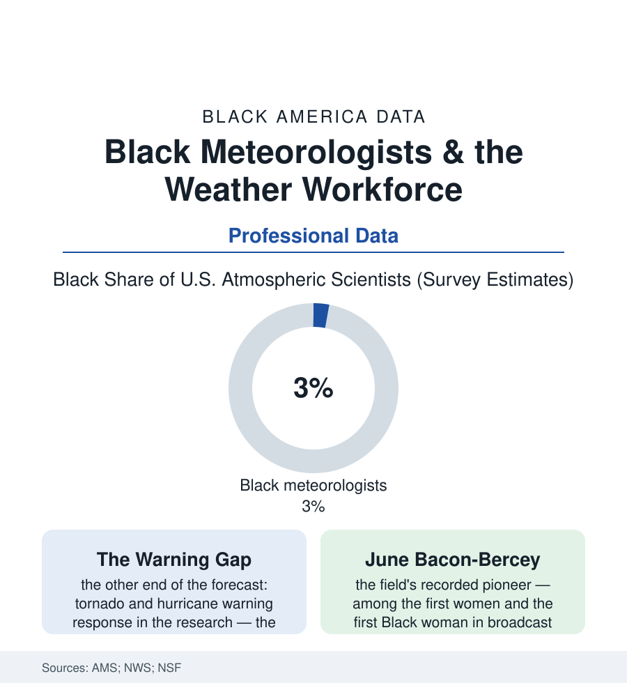

Black Employment
The Forecasters: Black Meteorologists and the Science America Watches
The broadcast meteorologist is the most-watched scientist in America — and the weather enterprise behind the forecast is about three percent Black. The meteorology file.

Every night, the most trusted scientist in America stands in front of a green screen and tells the country what the sky will do. Meteorology is the public's daily science — and its workforce, across the National Weather Service, the broadcast industry, and the private weather companies, is roughly three percent Black in the professional surveys, in a country whose weather risks fall hardest on Black households. This article reads the meteorology file.
A Small Science With a Narrow Door
The pipeline's anatomy is the STEM file's in miniature, with a geographic twist: the atmospheric-science degree is offered at a limited set of universities (the field's program map concentrated in the Plains, the research universities, and a small set of HBCUs — Jackson State's meteorology program among the field's notable producers of Black forecasters, its graduates staffing the Weather Service offices of the Southeast in the alumni data's unusual density), the mathematics prerequisites doing their early sorting in the algebra file's classrooms, and the profession's small absolute size (the BLS counts the nation's atmospheric scientists in the low five figures) making every cohort's composition a high-variance bet on a handful of departments' recruiting. The Weather Service's own workforce rows tell the federal version (a science-and-operations officer corps long counted among the least diverse in the civilian science agencies, its internships and pathways programs the recent corrective in the agency's reports), the broadcast side its commercial one (the on-air meteorologist a station's prestige hire — the AMS seal's holders thin in the Black population for the pipeline's reasons, the role's visibility making the absence conspicuous nightly: the forecaster as the one scientist most Black children could name, arriving in the workforce data at three percent). The private sector's growth (the weather-data industry's expansion — the aviation, agriculture, energy, and logistics forecasting of the economy's weather-exposed trillions) extends the file's stakes from representation to infrastructure: the people who model the storm are an input to every decision the storm country makes.
The field's Black pioneers stand in the record at its summit, which makes the three percent a story of doors rather than capacity: the Tuskegee experiment produced its own weather officers for the Airmen; Charles E. Anderson took the field's doctorate into the university and the Weather Bureau's research ranks in the postwar decades; and Warren M. Washington became one of the architects of modern climate modeling itself — his computer models of the atmosphere at the National Center for Atmospheric Research foundational to the science, his National Medal of Science the profession's highest civic honor. The men and women who built the field's tools were present from its computing dawn. The surveys' three percent measures not their successors' absence of talent but the recruiting map's narrowness — a field small enough that a few dozen fellowships, honestly distributed, would rewrite its census in a decade.
Why the Composition Is a Safety Variable
The file's second half is the research that makes meteorology's demographics a public-safety datum rather than a diversity talking point: the warning-response literature. The studies of tornado and hurricane behavior find the response chain — receiving the warning, understanding it, believing it applies to you, having the means to act — fraying at every link along the atlas's coordinates (the mobile-home residents of the storm file's housing data, the non-English and low-literacy households of the language file, the night tornadoes of the Southeast's Black Belt, where the fatality data are the nation's worst and the warning infrastructure — the sirens, the shelter map, the weather radio's penetration — thinnest in the counties the FEMA tables rank most vulnerable). The communication research's consistent finding is that trusted, local, demographically literate warning voices move behavior measurably — the forecaster who knows which neighborhood floods, which church basement is the shelter, which shift workers are asleep at noon — a knowledge the workforce's composition and local rootedness supply or fail to. The institutional responses are in the recent record: the Weather Service's equity assessments of its warning mission, the HBCU partnerships in atmospheric science, the broadcast industry's slow on-air diversification in the markets of the storm belt itself. A science whose product is a public warning has, in the end, a workforce question that is also a casualty question — the file's numbers are three percent of the forecasters against a fatality map that is anything but evenly drawn.
Reading the Weather Data
Meteorology is the science America consumes most and staffs most narrowly in this atlas's professional files — three percent of its practitioners Black, its risks distributed almost inversely. The atmosphere does not discriminate; the warning system, the shelter map, and the green screen's authority are human arrangements. The AMS publishes the membership. The storm season publishes the audit.
More in Black Employment
The Black Unemployment Rate: The Two-to-One Pattern
Black unemployment runs at roughly twice the White rate — 5.5 percent against 3.3 percent in annual averages — a ratio stable across five decades of federal data. How it is measured and why it persists.
Black Median Weekly Earnings: The 80-Cent Ratio
Black full-time workers earn a median of about $900 a week — roughly 80 cents for every dollar White workers earn. The BLS earnings data by group, gender, and occupation.
Black Labor Force Participation: Working at National Rates
Black labor force participation runs at roughly the national rate — and Black women participate at higher rates than White women. The BLS participation data.
Source: American Meteorological Society membership surveys; National Weather Service workforce data; U.S. Bureau of Labor Statistics; National Science Foundation science indicators.